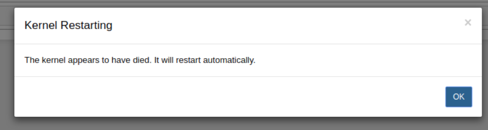
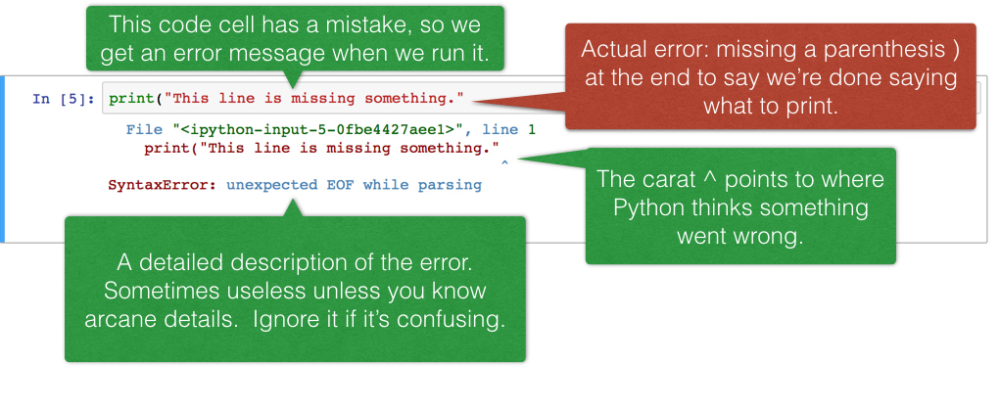

Economics 101B Spring 2018 Pre-Semester Exercises
Professor DeLong
Welcome to 101B! This introductory notebook will familiarize you with some of the basic strategies for data analysis that will be useful to you throughout the course. It will cover an overview of our software, an introduction to programming, and some economics.
Table of Contents
2 - Introduction to Coding Concepts
1 - Python Basics
2 - Pandas
3 - Visualization
3 - Macroeconomics
1 - Chapter 1
2 - Chapter 2
Our Computing Environment, Jupyter notebooks
This webpage is called a Jupyter notebook. A notebook is a place to write programs and view their results.
Text cells
In a notebook, each rectangle containing text or code is called a cell.
Text cells (like this one) can be edited by double-clicking on them. They’re written in a simple format called Markdown to add formatting and section headings. You don’t need to learn Markdown, but you might want to.
| After you edit a text cell, click the “run cell” button at the top that looks like ▶ | to confirm any changes. (Try not to delete the instructions of the lab.) |
| Understanding Check 1 This paragraph is in its own text cell. Try editing it so that this sentence is the last sentence in the paragraph, and then click the “run cell” ▶ | button . This sentence, for example, should be deleted. So should this one. |
Code cells
Other cells contain code in the Python 3 language. Running a code cell will execute all of the code it contains.
| To run the code in a code cell, first click on that cell to activate it. It’ll be highlighted with a little green or blue rectangle. Next, either press ▶ | or hold down the shift key and press return or enter. |
Try running this cell:
print("Hello, World!")
And this one:
print("\N{WAVING HAND SIGN}, \N{EARTH GLOBE ASIA-AUSTRALIA}!")
The fundamental building block of Python code is an expression. Cells can contain multiple lines with multiple expressions. When you run a cell, the lines of code are executed in the order in which they appear. Every print expression prints a line. Run the next cell and notice the order of the output.
print("First this line is printed,")
print("and then this one.")
Understanding Check 2 Change the cell above so that it prints out:
First this line,
then the whole 🌏,
and then this one.
Don’t be scared if you see a “Kernel Restarting” message! Your data and work will still be saved. Once you see “Kernel Ready” in a light blue box on the top right of the notebook, you’ll be ready to work again. You should rerun any cells with imports, variables, and loaded data.

Writing Jupyter notebooks
You can use Jupyter notebooks for your own projects or documents. When you make your own notebook, you’ll need to create your own cells for text and code.
To add a cell, click the + button in the menu bar. It’ll start out as a text cell. You can change it to a code cell by clicking inside it so it’s highlighted, clicking the drop-down box next to the restart (⟳) button in the menu bar, and choosing “Code”.
Understanding Check 3 Add a code cell below this one. Write code in it that prints out:
A whole new cell! ♪🌏♪
(That musical note symbol is like the Earth symbol. Its long-form name is \N{EIGHTH NOTE}.)
Run your cell to verify that it works.
Errors
Python is a language, and like natural human languages, it has rules. It differs from natural language in two important ways:
- The rules are simple. You can learn most of them in a few weeks and gain reasonable proficiency with the language in a semester.
- The rules are rigid. If you’re proficient in a natural language, you can understand a non-proficient speaker, glossing over small mistakes. A computer running Python code is not smart enough to do that.
Whenever you write code, you’ll make mistakes. When you run a code cell that has errors, Python will sometimes produce error messages to tell you what you did wrong.
Errors are okay; even experienced programmers make many errors. When you make an error, you just have to find the source of the problem, fix it, and move on.
We have made an error in the next cell. Run it and see what happens.
print("This line is missing something."
You should see something like this (minus our annotations):

The last line of the error output attempts to tell you what went wrong. The syntax of a language is its structure, and this SyntaxError tells you that you have created an illegal structure. “EOF” means “end of file,” so the message is saying Python expected you to write something more (in this case, a right parenthesis) before finishing the cell.
There’s a lot of terminology in programming languages, but you don’t need to know it all in order to program effectively. If you see a cryptic message like this, you can often get by without deciphering it. (Of course, if you’re frustrated, feel free to ask a friend or post on the class Piazza.)
Understanding Check 4 Try to fix the code above so that you can run the cell and see the intended message instead of an error.
Submitting your work
All assignments in the course will be distributed as notebooks like this one, and you will submit your work from the notebook. We will use a system called OK that checks your work and helps you submit. At the top of each assignment, you’ll see a cell like the one below that prompts you to identify yourself. Run it and follow the instructions.
# Don't change this cell; just run it.
# The result will give you directions about how to log in to the submission system, called OK.
# Once you're logged in, you can run this cell again, but it won't ask you who you are because
# it remembers you. However, you will need to log in once per assignment.
!pip install -U okpy
from client.api.notebook import Notebook
ok = Notebook('Intro.ok')
_ = ok.auth(force=True, inline=True)
When you finish an assignment, you need to submit it by running the submit command below. It’s OK to submit multiple times, OK will only try to grade your final submission for each assignment. Don’t forget to submit your assignment, even if you haven’t finished everything.
_ = ok.submit()
Now that you are comfortable with our computing environment, we are going to be moving into more of the fundamentals of Python, but first, run the cell below to ensure all the libraries needed for this notebook are installed.
!pip install numpy
!pip install pandas
!pip install matplotlib
Introduction to Programming Concepts
Part 1: Python basics
Before getting into the more advanced analysis techniques that will be required in this course, we need to cover a few of the foundational elements of programming in Python.
A. Expressions
The departure point for all programming is the concept of the expression. An expression is a combination of variables, operators, and other Python elements that the language interprets and acts upon. Expressions act as a set of instructions to be fed through the interpreter, with the goal of generating specific outcomes. See below for some examples of basic expressions.
# Examples of expressions:
#addition
print(2 + 2)
#string concatenation
print('me' + ' and I')
#you can print a number with a string if you cast it
print("me" + str(2))
#exponents
print(12 ** 2)
4
me and I
me2
144
You will notice that only the last line in a cell gets printed out. If you want to see the values of previous expressions, you need to call print on that expression. Try adding print statements to some of the above expressions to get them to display.
B. Variables
In the example below, a and b are Python objects known as variables. We are giving an object (in this case, an integer and a float, two Python data types) a name that we can store for later use. To use that value, we can simply type the name that we stored the value as. Variables are stored within the notebook’s environment, meaning stored variable values carry over from cell to cell.
a = 4
b = 10/5
Notice that when you create a variable, unlike what you previously saw with the expressions, it does not print anything out.
# Notice that 'a' retains its value.
print(a)
a + b
Question 1: Variables
See if you can write a series of expressions that creates two new variables called x and y and assigns them values of 10.5 and 7.2. Then assign their product to the variable combo and print it.
# Fill in the missing lines to complete the expressions.
x = ...
...
...
print(...)
Running the cell below will give you some feed back on your responses. Though the OK tests are not always comprehensive (passing all of the tests does not guarantee full credit for questions), they give you a pretty good indication as to whether or not you’re on track.
ok.grade('q01')
C. Lists
The next topic is particularly useful in the kind of data manipulation that you will see throughout 101B. The following few cells will introduce the concept of lists (and their counterpart, numpy arrays). Read through the following cell to understand the basic structure of a list.
A list is an ordered collection of objects. They allow us to store and access groups of variables and other objects for easy access and analysis. Check out this documentation for an in-depth look at the capabilities of lists.
To initialize a list, you use brackets. Putting objects separated by commas in between the brackets will add them to the list.
# an empty list
lst = []
print(lst)
# reassigning our empty list to a new list
lst = [1, 3, 6, 'lists', 'are' 'fun', 4]
print(lst)
To access a value in the list, put the index of the item you wish to access in brackets following the variable that stores the list. Lists in Python are zero-indexed, so the indicies for lst are 0, 1, 2, 3, 4, 5, and 6.
# Elements are selected like this:
example = lst[2]
# The above line selects the 3rd element of lst (list indices are 0-offset) and sets it to a variable named example.
print(example)
It is important to note that when you store a list to a variable, you are actually storing the pointer to the list. That means if you assign your list to another variable, and you change the elements in your other variable, then you are changing the same data as in the original list.
a = [1,2,3] #original list
b = a #b now points to list a
b[0] = 4
print(a[0]) #return 4 since we modified the first element of the list pointed to by a and b
4
Slicing lists
As you can see from above, lists do not have to be made up of elements of the same kind. Indices do not have to be taken one at a time, either. Instead, we can take a slice of indices and return the elements at those indices as a separate list.
### This line will store the first (inclusive) through fourth (exclusive) elements of lst as a new list called lst_2:
lst_2 = lst[1:4]
lst_2
Question 2: Lists
Build a list of length 10 containing whatever elements you’d like. Then, slice it into a new list of length five using a index slicing. Finally, assign the last element in your sliced list to the given variable and print it.
### Fill in the ellipses to complete the question.
my_list = ...
my_list_sliced = my_list[...]
last_of_sliced = ...
print(...)
ok.grade('q02')
Lists can also be operated on with a few built-in analysis functions. These include min and max, among others. Lists can also be concatenated together. Find some examples below.
# A list containing six integers.
a_list = [1, 6, 4, 8, 13, 2]
# Another list containing six integers.
b_list = [4, 5, 2, 14, 9, 11]
print('Max of a_list:', max(a_list))
print('Min of b_list:', min(a_list))
# Concatenate a_list and b_list:
c_list = a_list + b_list
print('Concatenated:', c_list)
D. Numpy Arrays
Closely related to the concept of a list is the array, a nested sequence of elements that is structurally identical to a list. Arrays, however, can be operated on arithmetically with much more versatility than regular lists. For the purpose of later data manipulation, we’ll access arrays through Numpy, which will require an import statement.
Now run the next cell to import the numpy library into your notebook, and examine how numpy arrays can be used.
import numpy as np
# Initialize an array of integers 0 through 9.
example_array = np.array([0, 1, 2, 3, 4, 5, 6, 7, 8, 9])
# This can also be accomplished using np.arange
example_array_2 = np.arange(10)
print('Undoubled Array:')
print(example_array_2)
# Double the values in example_array and print the new array.
double_array = example_array*2
print('Doubled Array:')
print(double_array)
This behavior differs from that of a list. See below what happens if you multiply a list.
example_list = [1, 2, 3, 4, 5, 6, 7, 8, 9]
example_list * 2
Notice that instead of multiplying each of the elements by two, multiplying a list and a number returns that many copies of that list. This is the reason that we will sometimes use Numpy over lists. Other mathematical operations have interesting behaviors with lists that you should explore on your own.
E. Looping
Loops are often useful in manipulating, iterating over, or transforming large lists and arrays. The first type we will discuss is the for loop. For loops are helpful in traversing a list and performing an action at each element. For example, the following code moves through every element in example_array, adds it to the previous element in example_array, and copies this sum to a new array.
new_list = []
for element in example_array:
new_element = element + 5
new_list.append(new_element)
new_list
The most important line in the above cell is the “for element in...” line. This statement sets the structure of our loop, instructing the machine to stop at every number in example_array, perform the indicated operations, and then move on. Once Python has stopped at every element in example_array, the loop is completed and the final line, which outputs new_list, is executed. It’s important to note that “element” is an arbitrary variable name used to represent whichever index value the loop is currently operating on. We can change the variable name to whatever we want and achieve the same result, as long as we stay consistent. For example:
newer_list = []
for completely_arbitrary_name in example_array:
newer_element = completely_arbitrary_name + 5
newer_list.append(newer_element)
newer_list
For loops can also iterate over ranges of numerical values. If I wanted to alter example_array without copying it over to a new list, I would use a numerical iterator to access list indices rather than the elements themselves. This iterator, called i, would range from 0, the value of the first index, to 9, the value of the last. I can make sure of this by using the built-in range and len functions.
for i in range(len(example_array)):
example_array[i] = example_array[i] + 5
example_array
Other types of loops
The while loop repeatedly performs operations until a conditional is no longer satisfied. A conditional is a boolean expression, that is an expression that evaluates to True or False.
In the below example, an array of integers 0 to 9 is generated. When the program enters the while loop on the subsequent line, it notices that the maximum value of the array is less than 50. Because of this, it adds 1 to the fifth element, as instructed. Once the instructions embedded in the loop are complete, the program refers back to the conditional. Again, the maximum value is less than 50. This process repeats until the the fifth element, now the maximum value of the array, is equal to 50, at which point the conditional is no longer true and the loop breaks.
while_array = np.arange(10) # Generate our array of values
print('Before:', while_array)
while(max(while_array) < 50): # Set our conditional
while_array[4] += 1 # Add 1 to the fifth element if the conditional is satisfied
print('After:', while_array)
Question 3: Loops
In the following cell, partial steps to manipulate an array are included. You must fill in the blanks to accomplish the following:
- Iterate over the entire array, checking if each element is a multiple of 5
- If an element is not a multiple of 5, add 1 to it repeatedly until it is
- Iterate back over the list and print each element.
Hint: To check if an integer
xis a multiple ofy, use the modulus operator%. Typingx % ywill return the remainder whenxis divided byy. Therefore, (x % y != 0) will returnTruewhenydoes not dividex, andFalsewhen it does.
# Make use of iterators, range, length, while loops, and indices to complete this question.
question_3 = np.array([12, 31, 50, 0, 22, 28, 19, 105, 44, 12, 77])
for i in range(len(...)):
while(...):
question_3[i] = ...
for element in question_3:
print(...)
ok.grade('q03')
F. Functions!
Functions are useful when you want to repeat a series of steps on multiple different objects, but don’t want to type out the steps over and over again. Many functions are built into Python already; for example, you’ve already made use of len() to retrieve the number of elements in a list. You can also write your own functions, and at this point you already have the skills to do so.
Functions generally take a set of parameters (also called inputs), which define the objects they will use when they are run. For example, the len() function takes a list or array as its parameter, and returns the length of that list.
The following cell gives an example of an extremely simple function, called add_two, which takes as its parameter an integer and returns that integer with, you guessed it, 2 added to it.
# An adder function that adds 2 to the given n.
def add_two(n):
return n + 2
add_two(5)
Easy enough, right? Let’s look at a function that takes two parameters, compares them somehow, and then returns a boolean value (True or False) depending on the comparison. The is_multiple function below takes as parameters an integer m and an integer n, checks if m is a multiple of n, and returns True if it is. Otherwise, it returns False.
if statements, just like while loops, are dependent on boolean expressions. If the conditional is True, then the following indented code block will be executed. If the conditional evaluates to False, then the code block will be skipped over. Read more about if statements here.
def is_multiple(m, n):
if (m % n == 0):
return True
else:
return False
is_multiple(12, 4)
is_multiple(12, 7)
Sidenote: Another way to write is_multiple is below, think about why it works.
def is_multiple(m, n):
return m % n == 0
Since functions are so easily replicable, we can include them in loops if we want. For instance, our is_multiple function can be used to check if a number is prime! See for yourself by testing some possible prime numbers in the cell below.
# Change possible_prime to any integer to test its primality
# NOTE: If you happen to stumble across a large (> 8 digits) prime number, the cell could take a very, very long time
# to run and will likely crash your kernel. Just click kernel>interrupt if it looks like it's caught.
possible_prime = 9999991
for i in range(2, possible_prime):
if (is_multiple(possible_prime, i)):
print(possible_prime, 'is not prime')
break
if (i >= possible_prime/2):
print(possible_prime, 'is prime')
break
Question 4: Writing functions
In the following cell, complete a function that will take as its parameters a list and two integers x and y, iterate through the list, and replace any number in the list that is a multiple of x with y.
Hint: use the is_multiple() function to streamline your code.
def replace_with_y(lst, x, y):
for i in range(...):
if(...):
...
return lst
ok.grade('q04')
Part 2: Pandas Dataframes
We will be using Pandas dataframes for much of this class to organize and sort through economic data. Pandas is one of the most widely used Python libraries in data science. It is commonly used for data cleaning, and with good reason: it’s very powerful and flexible, among many other things. Like we did with numpy, we will have to import pandas.
import pandas as pd
Creating dataframes
The rows and columns of a pandas dataframe are essentially a collection of lists stacked on top/next to each other. For example, if I wanted to store the top 10 movies and their ratings in a datatable, I could create 10 lists that each contain a rating and a corresponding title, and these lists would be the rows of the table:
top_10_movies = pd.DataFrame(data=np.array(
[[9.2, 'The Shawshank Redemption (1994)'],
[9.2, 'The Godfather (1972)'],
[9., 'The Godfather: Part II (1974)'],
[8.9, 'Pulp Fiction (1994)'],
[8.9, "Schindler's List (1993)"],
[8.9, 'The Lord of the Rings: The Return of the King (2003)'],
[8.9, '12 Angry Men (1957)'],
[8.9, 'The Dark Knight (2008)'],
[8.9, 'Il buono, il brutto, il cattivo (1966)'],
[8.8, 'The Lord of the Rings: The Fellowship of the Ring (2001)']]), columns=["Rating", "Movie"])
top_10_movies
Alternatively, we can store data in a dictionary instead of in lists. A dictionary keeps a mapping of keys to a set of values, and each key is unique. Using our top 10 movies example, we could create a dictionary that contains ratings a key, and movie titles as another key.
top_10_movies_dict = {"Rating" : [9.2, 9.2, 9., 8.9, 8.9, 8.9, 8.9, 8.9, 8.9, 8.8],
"Movie" : ['The Shawshank Redemption (1994)',
'The Godfather (1972)',
'The Godfather: Part II (1974)',
'Pulp Fiction (1994)',
"Schindler's List (1993)",
'The Lord of the Rings: The Return of the King (2003)',
'12 Angry Men (1957)',
'The Dark Knight (2008)',
'Il buono, il brutto, il cattivo (1966)',
'The Lord of the Rings: The Fellowship of the Ring (2001)']}
Now, we can use this dictionary to create a table with columns Rating and Movie
top_10_movies_2 = pd.DataFrame(data=top_10_movies_dict, columns=["Rating", "Movie"])
top_10_movies_2
Notice how both ways return the same table! However, the list method created the table by essentially taking the lists and making up the rows of the table, while the dictionary method took the keys from the dictionary to make up the columns of the table. In this way, dataframes can be viewed as a collection of basic data structures, either through collecting rows or columns.
Reading in Dataframes
Luckily for you, most datatables in this course will be premade and given to you in a form that is easily read into a pandas method, which creates the table for you. A common file type that is used for economic data is a Comma-Separated Values (.csv) file, which stores tabular data. It is not necessary for you to know exactly how .csv files store data, but you should know how to read a file in as a pandas dataframe. You can use the “read_csv” method from pandas, which takes in one parameter which is the path to the csv file you are reading in.
We will read in a .csv file that contains quarterly real GDI, real GDP, and nominal GDP data in the U.S. from 1947 to the present.
# Run this cell to read in the table
accounts = pd.read_csv("data/Quarterly_Accounts.csv")
The pd.read_csv function expects a path to a .csv file as its input, and will return a data table created from the data contained in the csv.
We have provided Quarterly_Accouunts.csv in the data directory, which is all contained in the current working directory (aka the folder this assignment is contained in). For this reason, we must specify to the read_csv function that it should look for the csv in the data directory, and the / indicates that Quarterly_Accounts.csv can be found there.
Here is a sample of some of the rows in this datatable:
accounts.head()
Indexing Dataframes
Oftentimes, tables will contain a lot of extraneous data that muddles our data tables, making it more difficult to quickly and accurately obtain the data we need. To correct for this, we can select out columns or rows that we need by indexing our dataframes.
The easiest way to index into a table is with square bracket notation. Suppose you wanted to obtain all of the Real GDP data from the data. Using a single pair of square brackets, you could index the table for "Real GDP"
# Run this cell and see what it outputs
accounts["Real GDP"]
Notice how the above cell returns an array of all the real GDP values in their original order. Now, if you wanted to get the first real GDP value from this array, you could index it with another pair of square brackets:
accounts["Real GDP"][0]
Pandas columns have many of the same properties as numpy arrays. Keep in mind that pandas dataframes, as well as many other data structures, are zero-indexed, meaning indexes start at 0 and end at the number of elements minus one.
If you wanted to create a new datatable with select columns from the original table, you can index with double brackets.
## Note: .head() returns the first five rows of the table
accounts[["Year", "Quarter", "Real GDP", "Real GDI"]].head()
You can also use column indices instead of names.
accounts[[0, 1, 2, 3]].head()
Alternatively, you can also get rid of columns you dont need using .drop()
accounts.drop("Nominal GDP", axis=1).head()
Finally, you can use square bracket notation to index rows by their indices with a single set of brackets. You must specify a range of values for which you want to index. For example, if I wanted the 20th to 30th rows of accounts:
accounts[20:31]
Filtering Data
As you can tell from the previous, indexing rows based on indices is only useful when you know the specific set of rows that you need, and you can only really get a range of entries. Working with data often involves huge datasets, making it inefficient and sometimes impossible to know exactly what indices to be looking at. On top of that, most data analysis concerns itself with looking for patterns or specific conditions in the data, which is impossible to look for with simple index based sorting.
Thankfully, you can also use square bracket notation to filter out data based on a condition. Suppose we only wanted real GDP and nominal GDP data from the 21st century:
accounts[accounts["Year"] >= 2000][["Real GDP", "Nominal GDP"]]
The accounts table is being indexed by the condition accounts["Year"] >= 2000, which returns a table where only rows that have a “Year” greater than $2000$ is returned. We then index this table with the double bracket notation from the previous section to only get the real GDP and nominal GDP columns.
Suppose now we wanted a table with data from the first quarter, and where the real GDP was less than 5000 or nominal GDP is greater than 15,000.
accounts[(accounts["Quarter"] == "Q1") & ((accounts["Real GDP"] < 5000) | (accounts["Nominal GDP"] > 15000))]
Many different conditions can be included to filter, and you can use & and | operators to connect them together. Make sure to include parantheses for each condition!
Another way to reorganize data to make it more convenient is to sort the data by the values in a specific column. For example, if we wanted to find the highest real GDP since 1947, we could sort the table for real GDP:
accounts.sort_values("Real GDP")
But wait! The table looks like it’s sorted in increasing order. This is because sort_values defaults to ordering the column in ascending order. To correct this, add in the extra optional parameter
accounts.sort_values("Real GDP", ascending=False)
Now we can clearly see that the highest real GDP was attained in the first quarter of this year, and had a value of 16903.2
Useful Functions for Numeric Data
Here are a few useful functions when dealing with numeric data columns.
To find the minimum value in a column, call min() on a column of the table.
accounts["Real GDP"].min()
To find the maximum value, call max().
accounts["Nominal GDP"].max()
And to find the average value of a column, use mean().
accounts["Real GDI"].mean()
Part 3: Visualization
Now that you can read in data and manipulate it, you are now ready to learn about how to visualize data. To begin, run the cells below to import the required packages we will be using.
%matplotlib inline
import matplotlib.pyplot as plt
We will be using US unemployment data from FRED to show what we can do with data. The statement below will put the csv file into a pandas DataFrame.
unemployment_data = pd.read_csv("data/detailed_unemployment.csv")
unemployment_data.head()
One of the advantages of pandas is its built-in plotting methods. We can simply call .plot() on a dataframe to plot columns against one another. All that we have to do is specify which column to plot on which axis. Something special that pandas does is attempt to automatically parse dates into something that it can understand and order them sequentially.
Sidenote: total_unemployed is a percent.
unemployment_data.plot(x='date', y='total_unemployed')
The base package for most plotting in Python is matplotlib. Below we will look at how to plot with it. First we will extract the columns that we are interested in, then plot them in a scatter plot. Note that plt is the common convention for matplotlib.pyplot.
total_unemployed = unemployment_data['total_unemployed']
not_labor = unemployment_data['not_in_labor_searched_for_work']
#Plot the data by inputting the x and y axis
plt.scatter(total_unemployed, not_labor)
# we can then go on to customize the plot with labels
plt.xlabel("Percent Unemployed")
plt.ylabel("Total Not In Labor, Searched for Work")
Though matplotlib is sometimes considered an “ugly” plotting tool, it is powerful. It is highly customizable and is the foundation for most Python plotting libraries. Check out the documentation to get a sense of all of the things you can do with it, which extend far beyond scatter and line plots. An arguably more attractive package is seaborn, which we will go over in future notebooks.
Question 5: Plotting
Try plotting the total percent of people unemployed vs those unemployed for more than 15 weeks.
total_unemployed = ...
unemp_15_weeks = ...
plt.scatter(total_unemployed, unemp_15_weeks)
plt.xlabel(...)
plt.ylabel(...)
# note: plt.show() is the equivalent of print, but for graphs
plt.show()
ok.grade('q05')
Macroeconomics
These questions are a mixture of math review and questions directly related to the reading from the textbook. There will be no OK tests available feedback, but these questions will be autograded.
For questions that are to be answered numerically, there is a code cell that starts with # ANSWER and has a variable currently set to underscores. Replace those underscores with your final answer. It is okay to make other computations in that cell and others, so long a the given variable matches your answer.
For free response questions, write your answers in the provided markdown cell that starts with ANSWER:. Do not change the heading, and write your entire answer in that one cell.
Chapter 1: Introduction to Macroeconomics
Suppose a quantity grows at a steady proportional rate of 3% per year.
How long will it take to double?
# ANSWER
TIME_TO_DOUBLE = ___
Quadruple?
# ANSWER
TIME_TO_QUADRUPLE = ___
Grow 1024-fold?
# ANSWER
TIME_TO_1024 = ___
Suppose we have a quantity x(t) that varies over time following the equation: $\frac{dx(t)}{dt} = -(0.06)t + 0.36$
Without integrating the equation:
$1.$ Tell me what the long-run steady-state value of $x$–that is, the limit of $x$ as $t$ approaches in infinity–is going to be.
steady_state_val = ___
$2.$ Suppose that the value of $x$ at time $t=0$, $x(0)$ equals 12. Once again, without integrating the equation, tell me how long it will take x to close half the distance between its initial value of 12 and its steady-state value.
half_dist_time = ___
$3.$ How long will it take to close 3/4 of the distance?
three_fourth_time = ___
$4.$ $7/8$ of the distance?
seven_eighth_time = ___
$5.$ $15/16$ of the distance?
fifteen_sixteenth = ___
Now you are allowed to integrate $\frac{dx(t)}{dt} = -(0.06)t + 0.36$.
$1.$ Write down and solve the indefinite integral.
ANSWER: $2.$ Write down and solve the definite integral for the initial condition $x(0) = 12$. ANSWER: $3.$ Write down and solve the definite integral for the initial condition $x(0) = 6$. ANSWER: #### Suppose we have a quantity $z = (\frac{x}{y})^\beta$ Suppose $x$ is growing at 4% per year and that $\beta=1/4$: $1.$ How fast is $z$ growing if $y$ is growing at 0% per year? {:.input_area} ```python zero_per_growth = ___ ``` $2.$ If $y$ is growing at 2% per year? {:.input_area} ```python two_per_growth = ___ ``` $3.$ If $y$ is growing at 4% per year? {:.input_area} ```python four_per_growth = ___ ``` #### Rule of 72 (Use it for the next four questions) 1. If a quantity grows at about 3% per year, how long will it take to double? {:.input_area} ```python time_to_double = ___ ``` $2.$ If a quantity shrinks at about 4% per year, how long will it take it to halve itself? {:.input_area} ```python time_to_half = ___ ``` $3.$ If a quantity doubles five times, how large is it relative to its original value? {:.input_area} ```python doubled_five_times_ratio = ___ ``` $4.$ If a quantity halves itself three times, how large is it relative to its original value? {:.input_area} ```python halved_three_times_ratio = ___ ``` #### Interactive Model for Rule of 72 In future problem sets, you will build models of your own, but for now, look over this code. Its a simple model that shows what happens as you adjust a single parameter (the interest rate) and its effect on the outcome (the time to double). First we need to make sure all of our packages are imported. {:.input_area} ```python import matplotlib.pyplot as plt import numpy as np from ipywidgets import interact, IntSlider %matplotlib inline ``` Our model is going to be graph that shows what happens as the interest rate varies. {:.input_area} ```python def graph_rule_of_72(interest_rate): # np.linspace takes values evenly spaced between a stop and end point. In this case, # will take 30 values between 1 and 10. These will be our x values in the graph. x = np.linspace(1,10,30) # Here we create are corresponding y values y = 72 / x print('Time to double:', 72 / interest_rate, 'years') # graphing our lines plt.plot(x,y) # graphing the specific point for our interest_rate plt.scatter(interest_rate, 72 / interest_rate, c='r') plt.xlabel('interest rate (%)') plt.ylabel('time (years)') plt.show() ``` When we call `interact`, select the function that we want to interact with (`graph_rule_of_72`) and tell it what the value we want its parameters to take on. In this case, `graph_rule_of_72` only takes one parameter, `interest_rate`, and we choose to put an adjustable slider there. You can check out the [ipywidget examples](https://github.com/jupyter-widgets/ipywidgets/blob/master/docs/source/examples/Index.ipynb) for more uses. {:.input_area} ```python interact(graph_rule_of_72, interest_rate=IntSlider(min=1,max=10,step=1)) ``` #### Why do DeLong and Olney think that the interest rate and the level of the stock market are important macroeconomic variables? ANSWER: #### What are the principal flaws in using national product per worker as a measure of material welfare? Given these flaws, why do we use it anyway? ANSWER: #### What is the difference between the nominal interest rate and the real interest rate? Why do DeLong and Olney think that the real interest rate is more important? ANSWER: ### Chapter 2: Measuring the Macroeconomy #### National Income and Product Accounting Explain whether or not, why, and how the following items are included in the calculations of national product: $1.$ Increases in business inventories. ANSWER: $2.$ Fees earned by real estate agents on selling existing homes. ANSWER: $3.$ Social Security checks written by the government. ANSWER: $4.$ Building of a new dam by the Army Corps of Engineers. ANSWER: $5.$ Interest that your parents pay on the mortgage they have on their house. ANSWER: $6.$ Purchases of foreign-made trucks by American residents ANSWER: #### In or Out of National Product? And Why Explain whether or not, why, and how the following items are included in the calculation of national product: $1.$ The sale for \\$25,000 of an automobile that cost \\$20,000 to manufacture that had been produced here at home last year and carried over in inventory. ANSWER: $2.$ The sale for \\$35,000 of an automobile that cost \\$25,000 to manufacture newly- made at home this year. ANSWER: $3.$ The sale for \\$45,000 of an automobile that cost \\$30,000 to manufacture that was newly-made abroad this year and imported. ANSWER: $4.$ The sale for \\$25,000 of an automobile that cost \\$20,000 to manufacture that was made abroad and imported last year. ANSWER: #### In or Out of National Product? And Why II Explain whether or not, why, and how the following items are included in the calculation of GDP: $1.$ The purchase for \\$500 of a dishwasher produced here at home this year. ANSWER: $2.$ The purchase for $500 of a dishwasher made abroad this year. ANSWER: $3.$ The purchase for $500 of a used dishwasher. ANSWER: $4.$ The manufacture of a new dishwasher here at home for $500 of a dishwasher that then nobody wants to buy. ANSWER: #### Components of National Income and Product Suppose that the appliance store buys a refrigerator from the manufacturer on December 15, 2018 for \\$600, and that you then buy that refrigerator on January 15, 2019 for \\$1000: $1.$ What is the contribution to GDP in 2018? {:.input_area} ```python contribution_2018 = ___ ``` $2.$ How is the refrigerator accounted for in the NIPA in 2019? ANSWER: $3.$ What is the contribution to GDP in 2018? {:.input_area} ```python contribution_2019 = ___ ``` $4.$ How is the refrigerator accounted for in the NIPA in 2019? ANSWER: {:.input_area} ```python # These lines are reading in CSV files and creating dataframes from then, you don't have to change about them! unemployment = pd.read_csv("data/Unemployment.csv") quarterly_acc = pd.read_csv("data/Quarterly_Accounts.csv") from_2007 = quarterly_acc.loc[(quarterly_acc["Year"].isin(np.arange(2007, 2018)))] ``` ### Estimating National Product The Bureau of Economic Analysis measures national product in two different ways: as total expenditure on the economy’s output of goods and services and as the total income of everyone in the economy. Since – as you learned in earlier courses – these two things are the same, the two approaches should give the same answer. But in practice they do not. We have provided a data table `quarterly_gdp` that contains quarterly data on real GDP measured on the expenditure side (referred to in the National Income and Product Accounts as “Real Gross Domestic Product, chained dollars”) and real GDP measured on the income side (referred to as “Real Gross Domestic Income, chained dollars”). The table refers to Real Gross Dometic Product as "Real GDP" and to Real Gross Dometic Income as "Real GDI", and they are measured in billions of dollars. (Note: You will not have to use Nominal GDP) Another table, `from_2007`, has been created from `quarterly_gdp`, and includes information from 2007 to 2017. Below is a snippet from `from_2007`: {:.input_area} ```python from_2007.head(10) ``` $1.$ Compute the growth rate at an annual rate of each of the two series by quarter for 2007:Q1–2012:Q4. {:.input_area} ```python gdi_rate = ___ gdp_rate = ___ ``` $2.$ Describe any two things you see when you compare the two series that you find interesting, and explain why you find them interesting. ANSWER: #### Calculating Real Magnitudes: $1.$ When you calculate real national product, do you do so by dividing nominal national product by the price level or by subtracting the price level from nominal national product? ANSWER: $2.$ When you calculate the real interest rate, do you do so by dividing the nominal interest rate by the price level or by subtracting the inflation rate from the nominal interest rate? ANSWER: $3.$ Are your answers to (a) and (b) the same? Why or why not? ANSWER: ### Unemployment Rate Use the `unemployment` table provided to answer the following questions. ***All numbers (other than percents) are in the thousands.*** Here are the first five entries of the table. {:.input_area} ```python unemployment.head() ``` #### What, roughly, was the highest level the U.S. unemployment rate (measured as Percent Unemployed of Labor Force in the table) reached in: $1.$ The 20th century? {:.input_area} ```python unemployment_20th = ___ ``` $2.$ The past fifty years? {:.input_area} ```python unemployment_past_50 = ___ ``` $3.$ The twenty years before 2006? {:.input_area} ```python unemployment_before_2006 = ___ ``` $4.$ Given your answers to (1) through (3), Do you think there is a connection between your answer to the question above and the fact that Federal Reserve Chair Alan Greenspan received a five-minute standing ovation at the end of the first of many events marking his retirement in 2005? ANSWER: #### The State of the Labor Market $1.$ About how many people lose or quit their jobs in an average year? {:.input_area} ```python average_quitters = ___ ``` $2.$ About how many people get jobs in an average year? {:.input_area} ```python average_getters = ___ ``` $3.$ About how many people are unemployed in an average year? {:.input_area} ```python average_unemployed = ___ ``` $4.$ About how many people are at work in an average year? {:.input_area} ```python average_workers = ___ ``` $5.$ About how many people are unemployed now? {:.input_area} ```python unemployed_now = ___ ``` #### National Income Accounting: $1.$ What was the level of real GDP in 2005 dollars in 1970? {:.input_area} ```python real_gdp_2005 = ___ ``` $2.$ What was the rate of inflation in the United States in 2000? {:.input_area} ```python inflation_rate_2000 = ___ ``` $3.$ Explain whether or not, how, and why the following items are included in the calculation of GDP: (i) rent you pay on an apartment, (ii) purchase of a used textbook, (iii) purchase of a new tank by the Department of Defense, (iv) watching an advertisement on youtube. ANSWER: Congratulations, you have finished your first assignment for Econ 101B! Run the cell below to submit all of your work. Make sure to check on OK to make sure that it has uploaded. {:.input_area} ```python _ = ok.submit() ``` Some materials this notebook were taken from [Data 8](http://data8.org/), [CS 61A](http://cs61a.org/), and [DS Modules](http://data.berkeley.edu/education/modules) lessons.